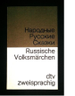

Russische Volksmarchen. Russisch- Deutsch.

Der Band enthalt sechs russische Volksmarchen aus der Sammlung von A.N. Afanasjew (1854)Das Marchen von dem Frosch und dem ReckenDas Marchen von dem silbernen Schusselchen und dem saftigen ApfelchenDas Marchen von Wassilissa der WunderschonenDas Marchen von dem starken und tapferen, unbesiegbaren Helden Iwan Zarewitsch und seiner wunderschonen Gemahlin Zar-JungfrauDas Marchen vom Vaterchen FrostDas Marchen vom Glucklosen SchutzenLanguages: German and Russian